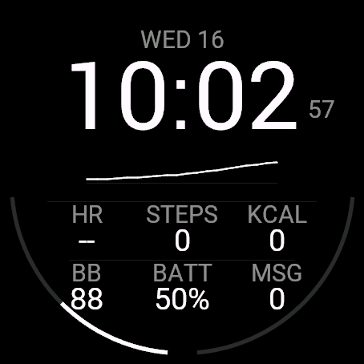
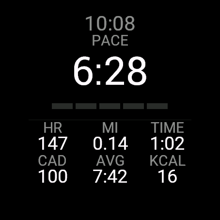
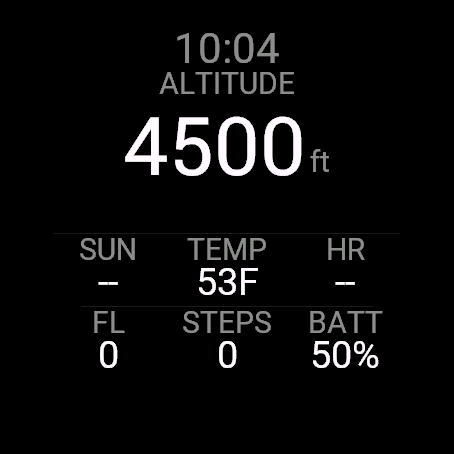
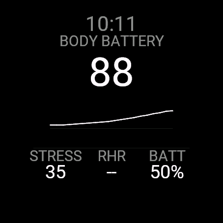
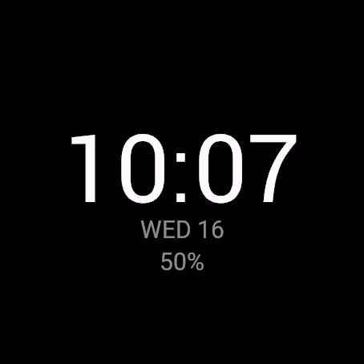

Overwatch｜自动切换5种布局的Garmin表盘
大多数数据类表盘只有一个固定画面。Overwatch内置了针对一天中不同场景优化的5种布局，在自动模式下会自动判断当下需要哪一种并进行切换。
结论：开始跑步就自动切换为跑步画面，就寝时段则变得昏暗安静——无需自己动手切换。
适合什么样的人？
- 同时进行跑步、徒步等多种活动的用户
- 不想每次都手动切换表盘设置的用户
- 希望常亮显示(Always-On)时兼顾电池续航与可读性的用户
- 希望根据心情调整表盘配色的用户(4种强调色可选)
5种布局
| 布局 | 显示内容 |
|---|---|
| Cockpit — 一次显示全部 | 大号时刻、最近1小时的Body Battery趋势图，以及心率・步数・消耗卡路里・Body Battery・手表电量・通知共6项数据。屏幕边缘两条量表(手表电量／步数目标) |
| Track — 跑步时 | 大号实时配速、心率、距离、经过时间、步频、平均配速、消耗卡路里，活动记录中一屏显示 |
| Trail — 爬升时 | 大号标高显示、距日落剩余时间、气温、心率、爬升楼层、步数、电量 |
| Recovery — 次日清晨 | 大号Body Battery及最近1小时趋势线，以及压力、静息心率、电量 |
| Night — 安静・昏暗 | 仅以屏幕可绘制的最大字号显示时刻，下方显示日期与电量。适合就寝及常亮显示 |





主要功能
| 功能 | 说明 |
|---|---|
| 自动模式(默认) | 根据活动类型与时间段自动在5种布局间切换 |
| 可读性设计 | 使用各机型可绘制的最大数字字号，单位跟随手表设置(km/mi等) |
| 强调色 | 可选白色／绿色／琥珀色／青色4种 |
| 支持常亮显示(Always-On) | 低电量状态下切换为调暗的纯时刻显示，并每分钟移动1像素以防止烧屏 |
适配机型
Venu 3／Venu 3S／Forerunner 265／Forerunner 265S／Forerunner 965／fenix 8 AMOLED（43・47mm）／fenix 9（43・47mm）／fenix 9 Pro（43・47・51mm）／epix Pro (Gen 2) 47mm
价格与购买方式
安装后24小时内，所有功能均可免费试用。试用期结束后，一次性解锁购买(US$3.99・买断制)即可使用全部功能，无追加费用或按月付费。
试用期结束后，表盘会显示6位数代码及「www.kzl.io/code」网址。在手机等设备上打开该网址并输入代码完成支付后，数分钟内自动解锁。支付由第三方服务KiezelPay(信用卡／PayPal)处理，并非Garmin官方。购买一次后，同一Garmin账户下的其他适配机型无需再次购买。
常见问题
Q. Overwatch可以免费使用吗？
A. 安装后24小时内，所有功能均可免费试用。试用期结束后，一次性支付US$3.99即可使用全部功能，无需按月付费。
Q. 什么是自动模式？
A. 跑步时自动切换为Track，徒步时切换为Trail，就寝时段切换为Night，起床后数小时切换为Recovery，其余时间则显示Cockpit。也可以固定使用某一种布局。
Q. 支付在哪里进行？
A. 并非Garmin官方支付，而是由第三方服务「KiezelPay」处理。试用期结束后，表盘会显示6位数代码和网址，在手机上打开该网址并输入代码即可完成支付(支持信用卡・PayPal)。
Q. 支持哪些机型？
A. 支持Venu 3・Venu 3S・Forerunner 265・Forerunner 265S・Forerunner 965・fenix 8 AMOLED(43/47mm)・fenix 9(43/47mm)・fenix 9 Pro(43/47/51mm)・epix Pro (Gen 2) 47mm。
Q. 会影响电池续航吗？
A. 在低电量状态(Always-On)下，会切换为调暗的纯时刻显示，并每分钟移动1像素，兼顾AMOLED防烧屏与电池续航。